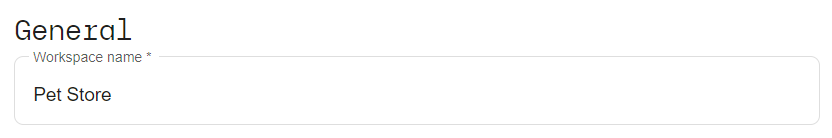
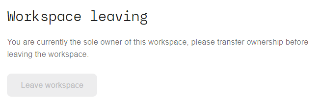
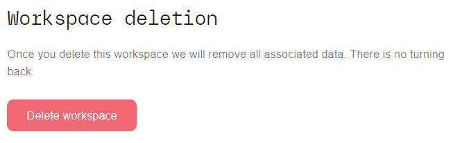

Settings
This page allows to
- change workspace settings
- add or remove workspace members
- delete the currently selected workspace
Change workspace name
Change the name of the currently selected workspace by entering any name here:

Leave workspace
You can leave the workspace, so as to no longer be a member and/or administrator of it:

However, in case your account is currently the only administrator for the workspace, you need to first add another member with the role "Workspace admin".
Delete workspace
Finally you can delete the currently selected workspace:

Click the "Delete workspace" button and confirm the deletion by clicking "Yes" in the confirmation pop-up dialog to delete the workspace and irrevocably remove all its associated services and resources.